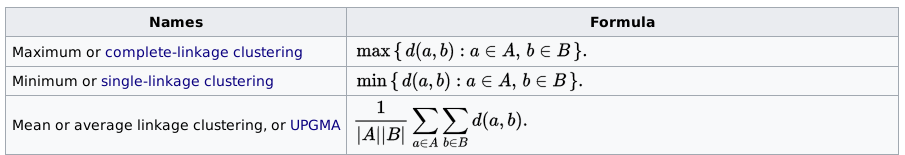
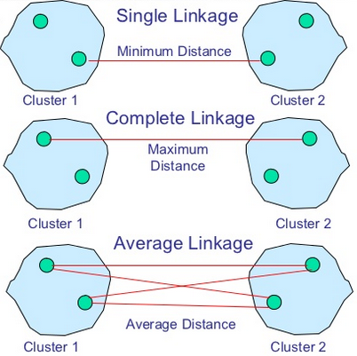
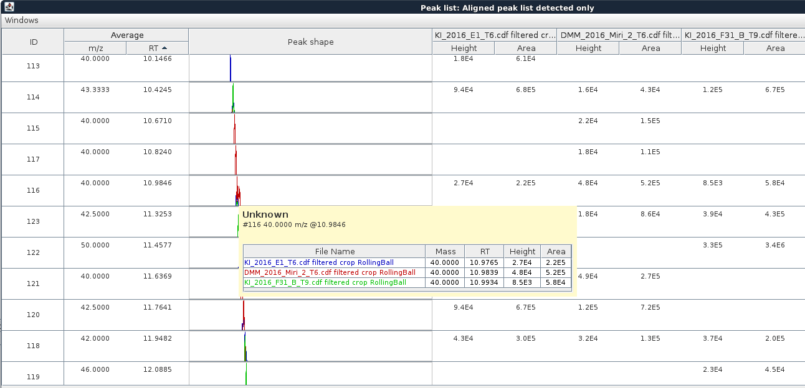

Hierachical aligner GC (or Hierarchical Clustering aligner)
Description
This method aligns detected peaks in different samples through a match score. This score is calculated
based on the mass spectrum and retention time of each peak and ranges of tolerance stipulated in the parameters
setup dialog.
General considerations
GeneralAlgorithm: Agglomerative / hierarchical clustering approaches
How
They Work
Given a set of N items to be clustered, and an N*N distance (or similarity)
matrix, the basic process of hierarchical clustering (defined by S.C. Johnson in 1967 - https://home.deib.polimi.it/matteucc/Clustering/tutorial_html/hierarchical.html#johnson) is this:
- Start by assigning
each item to a cluster, so that if you have N items, you now have N clusters,
each containing just one item. Let the distances (similarities) between the
clusters the same as the distances (similarities) between the items they contain.
- Find the closest (most similar)
pair of clusters and merge them into a single cluster, so that now you have
one cluster less.
- Compute distances (similarities)
between the new cluster and each of the old clusters.
- Repeat steps 2 and 3 until all
items are clustered into a single cluster of size N. (*)
Step 3 can be done
in different ways, which is what distinguishes single-linkage from
complete-linkage and average-linkage clustering.
In single-linkage clustering (also called the connectedness
or minimum method), we consider the distance between one cluster and
another cluster to be equal to the shortest distance from any member
of one cluster to any member of the other cluster. If the data consist of similarities,
we consider the similarity between one cluster and another cluster to be equal
to the greatest similarity from any member of one cluster to any member
of the other cluster.
In complete-linkage clustering (also called the diameter or
maximum method), we consider the distance between one cluster and another
cluster to be equal to the greatest distance from any member of one cluster
to any member of the other cluster.
In average-linkage clustering, we consider the distance between one
cluster and another cluster to be equal to the average distance from
any member of one cluster to any member of the other cluster.
A variation on average-link clustering is the UCLUS method of R.
D'Andrade (1978) - https://home.deib.polimi.it/matteucc/Clustering/tutorial_html/hierarchical.html#dandrade - which uses the median distance, which is much more
outlier-proof than the average distance.
This kind of hierarchical
clustering is called agglomerative because it merges clusters iteratively.
There is also a divisive hierarchical clustering which does the reverse
by starting with all objects in one cluster and subdividing them into smaller
pieces. Divisive methods are not generally available, and rarely have been applied.
(*) Of course there
is no point in having all the N items grouped in a single cluster but, once
you have got the complete hierarchical tree, if you want k clusters you just
have to cut the k-1 longest links.
>> Available linkage criterion are:
The linkage criterion determines the distance between sets of observations as a function of the pairwise distances between observations.
Some commonly used linkage criteria between two sets of observations A and B are:

where d is the chosen metric.
Linkage methods:

MZmine GC: Specific considerations
>> How distance matrix between all pairs of observations is obtained
- Compute a similarity score based on chemical likelihood only
- Compute a similarity score based on RT likelihood only
- Determine a combined weighted (=mixture) score based on a mixture of the above two scores
Giving:
1. Chemical similarity measurement (chemSimScore)

2. Retention time score
Retention time score is normalized relatively to the RT window tolerance provided by the user (rtScore = (1.0d - rtDiff / rtMaxDiff))
3. Mixture score
The final mixture score (score = (chemSimScore * mzWeight) + (rtScore * rtWeight)).

A square matrix is generated by comparing all the scores, for all the pairs of peaks.
>> Getting clusters from rooted binary tree
The algorithm methods described above all lead to a unique binary tree where all items are clustered into a single cluster of size N (number of leafs).
A final step is required to get the very final clusters list. A "cutoff" based on two criterion allows to split the single cluster into appropriate subgroups:
- A cluster cannot contain more than one leaf per sample
- A cluster cannot contain two leafs for which the distance (or mixture similarity score) is to low
Example with a 3 samples binary tree

Method parameters
- Peak list name
- Name of the new aligned peak list
- m/z tolerance
- This value sets the range, in terms of m/z, for possible peaks to be
aligned. Maximum allowed m/z difference
- Weight for m/z
- This is the assigned weight for m/z difference at the moment of match score calculation between peak rows.
In case of perfectly matching m/z values the score receives the complete weight.
- Retention time tolerance type
- Maximum RT difference can be defined either using absolute or relative value
- Absolute RT tolerance
- Maximum allowed absolute RT difference
- Relative RT tolerance
- Maximum allowed relative RT difference
- Weight for RT
- This is the assigned weight for RT difference at the moment of match score calculation between peak rows.
In case of perfectly matching RT values the score receives the complete weight.
- Export dendrogram as TXT
- Results in CDT + GTR files (See bellow how to visualize those files).
- Dendrogram output text filename
- Name of the resulting TXT file to write the clustering resulting dendrogram to. If the file already exists, it will be overwritten.
New aligned peak list showing peaks from 3 different samples

Clustering result can be exported into CDT+GTR format
The latter can be then browsed using common applications such as TreeView - https://sourceforge.net/projects/jtreeview/.
Inspiration taken from